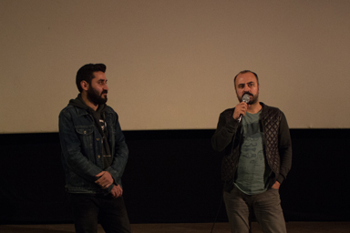
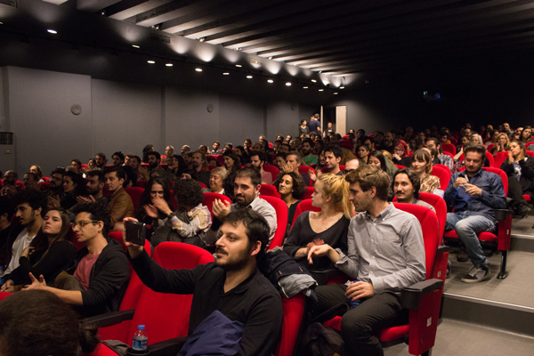
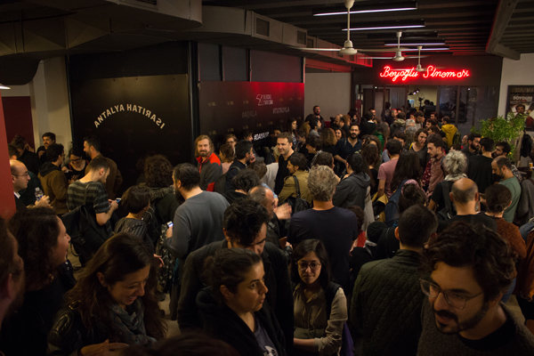
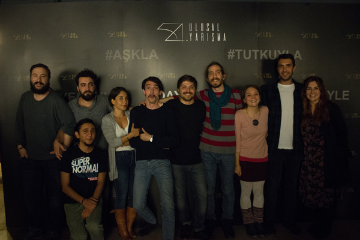
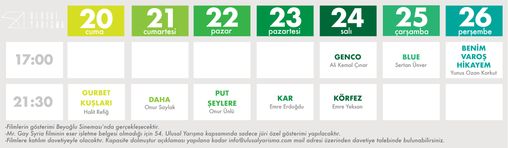
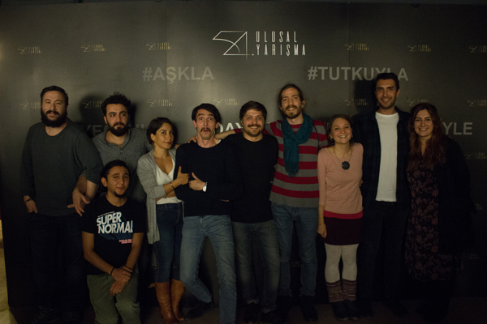
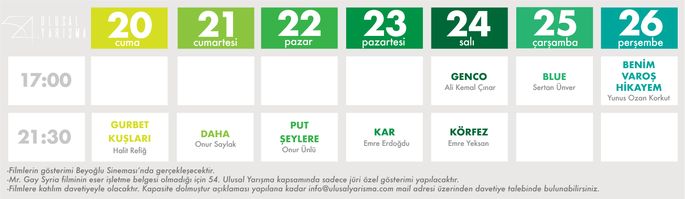

54. Ulusal Yarışma - Gênco & Körfez
54. Ulusal Yarışma'da beşinci gün iki filmle devam etti. Saat 17.00 gösteriminde Gênco, 21.30’da ise Körfez filmleri izleyiciyle buluştu.
Filmin yönetmeni, senaristi ve başrol oyuncusu Ali Kemal Çınar’ın katılımıyla gerçekleşen Gênco’nun ardından Sinan Yusufoğlu’nun moderatörlüğünde bir söyleşi yapıldı.28. Ankara Uluslararası Film Festivali Ulusal Yarışması’nda En İyi Film ödülünü kazanan Gênco, bir süper kahraman filmi. Yönetmen Ali Kemal Çınar, filmin yapım sürecine fon bulamadığı için her şeyi kendi yapmak zorunda kaldığını söyledi ve ekledi: "Fakat yine de bütçenin çok az olmasının filmin önüne geçmemesi gerekiyordu. Buna dikkat ederek hareket ettim."
Saat 21.30’daki Körfez’in geniş katılımla yapılan gösterimine filmin yönetmeni Emre Yeksan ile birlikte oyuncuları ve ekibi de katıldı. Söyleşinin moderatörlüğünü ise Senem Aytaç yaptı.Yeksan, şayet ulusal yarışma iptal edilmeseydi dahi Antalya Film Festivali’ne katılmayacaklarını, festivali 2014 yılındaki sansür krizinden beri boykot ettiklerini açıkladı. “Mesele sadece ulusal yarışmanın iptali değil, sansürü unutmamamız gerekiyor. Antalya’ya mecbur olmadığımızı burdaki dayanışma sayesinde görüyoruz.”
Dünya prömiyeri 74. Venedik Film Festivali’nde yapılan Körfez, 24. Uluslararası Adana Film Festivali’nde Jüri Özel Ödülü kazandı. 30’lu yaşlarda ailesinin yanına İzmir'e geri dönen Selim'in İzmir'de yeni bir dünyayı keşfini anlatan film seyircinin beğenisiyle karşılandı
   


